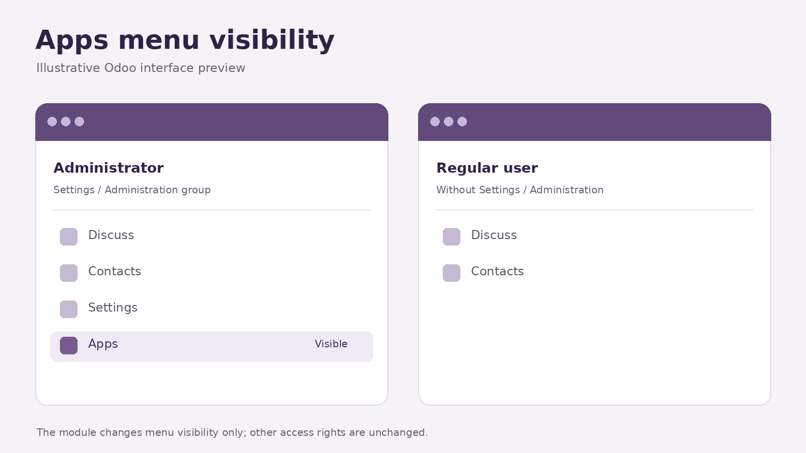

Keep the Apps menu visible to system administrators.
This module assigns the built-in Apps menu to Odoo's
Settings / Administration group
(base.group_system). Users outside that group do not see
the Apps menu; system administrators can still use it.
No configuration is required after installation.
The Apps menu is visible to administrators and hidden from users without the Settings / Administration group.

Illustrative interface preview. The exact menus and layout depend on the Odoo installation.
Designed for Odoo 19.0. Requires only the Odoo base module.
This module changes menu visibility. It does not change model access rights, record rules, or permissions granted by other modules.